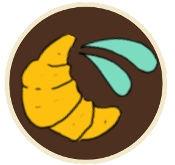

Pan Y Teatro
Historia

David Alfaro Siqueiros pinta el mural Ejercicio Plástico en Buenos Aires, marcando una influencia importante en el muralismo argentino.
Comienzan a surgir murales con temáticas sociales y obreras, influenciados por el muralismo mexicano.
Movimiento de murales en apoyo a luchas sindicales y obreras, como los realizados por grupos peronistas y de izquierda.
Retorno a la democracia; el arte callejero comienza a recuperar espacios tras la censura de la dictadura.
Crecimiento del grafiti y del arte urbano en barrios de Buenos Aires como forma de protesta social durante el menemismo.
Explosión del arte callejero tras la crisis económica, con obras que denuncian desigualdades y buscan reconstruir la identidad popular.
Fundación de "Movimiento de Arte Callejero", un colectivo de artistas que combina arte y activismo político.
Expansión del muralismo como expresión cultural en barrios populares, con temáticas de memoria, género y derechos humanos.
El arte callejero se consolida como patrimonio cultural en varias ciudades, con festivales como "Meeting of Styles" en Buenos Aires.
1933
1940-1950
1970
1983
1990
2001
2007
2010-2020
2023